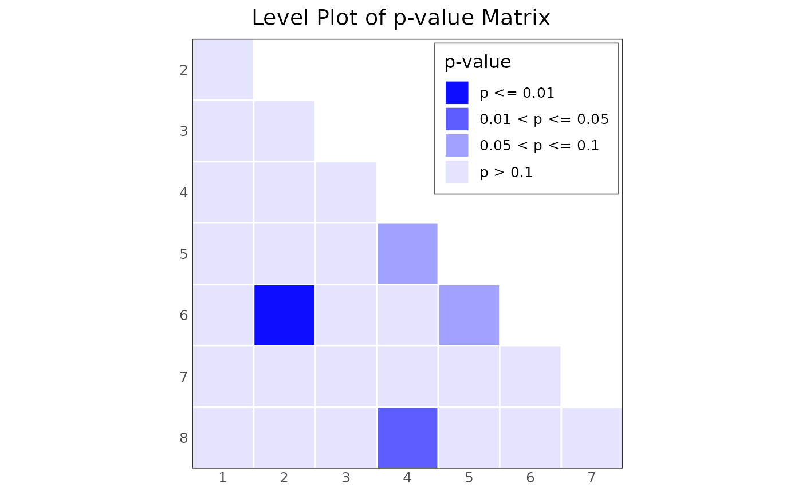
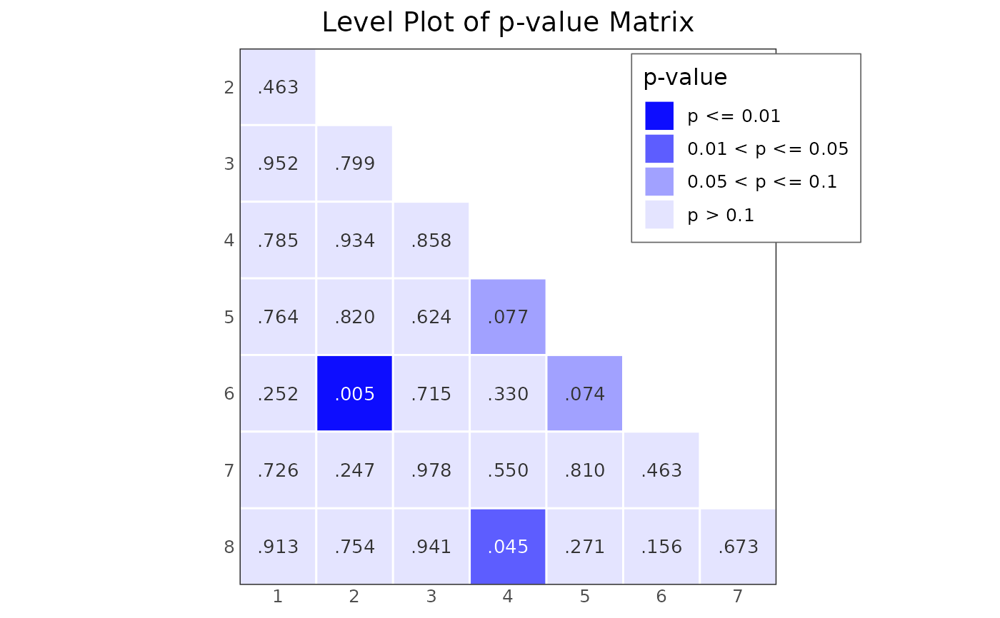
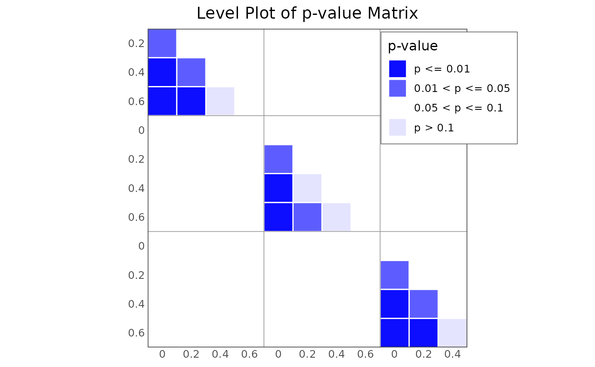

Plots the p-values of pairwise comparisons as a square grid of tiles, one for each pair of levels, like a correlation plot: the lower triangle only, the tiles coloured by the size of the p-value.
Arguments
- pmatrix
A matrix with p-values from pairwise comparisons (the lower triangle is used), or a list of such matrices (e.g.
p_valueMatrixofpredictmeanswithatvar), which are drawn as one square panel each, titled by the list's names (the levels ofatvar).- conf_level
The p-values below
1 - conf_levelare highlighted (level = 0.05before 2.0). With the default 0.95 the tiles show four bands (up to 0.01, 0.05, 0.1 and above); with any other value two (up to1 - conf_leveland above).- mtitle
The main title in the graph.
- xylabel
The x and y labels in the graph: one for each row of the matrix (or of the list's matrices together). The default uses the row names of the matrix, else the row numbers.
- ...
Not used:
level,margin,legendx,newwd(before 2.0) stop with their 2.0 spelling. (ggplot2 sizes the margins. The legend always lists every band, in the order of the p-values; it sits in the empty upper triangle of a single matrix of 6 or more rows, otherwise to the right of the plot.)- values
Whether to print each p-value on its tile (the default is
FALSE). Useful for up to about 15 levels.- basesz
The base font size. The default is 12.
Value
A ggplot object (invisibly NULL when the matrix has
no pair of levels). Printing it draws the plot; it can be changed with the
usual ggplot2 functions. Before 2.0 the plot was drawn with base graphics
and nothing was returned: inside a function or a loop, wrap the call in
print().
Examples
library(predictmeans)
set.seed(2013)
pvalues <- runif(28)
pmatrix <- matrix(0,8,8)
pmatrix[lower.tri(pmatrix)] <- pvalues
round(pmatrix, 4)
#> [,1] [,2] [,3] [,4] [,5] [,6] [,7] [,8]
#> [1,] 0.0000 0.0000 0.0000 0.0000 0.0000 0.0000 0.0000 0
#> [2,] 0.4633 0.0000 0.0000 0.0000 0.0000 0.0000 0.0000 0
#> [3,] 0.9523 0.7986 0.0000 0.0000 0.0000 0.0000 0.0000 0
#> [4,] 0.7849 0.9342 0.8579 0.0000 0.0000 0.0000 0.0000 0
#> [5,] 0.7635 0.8197 0.6238 0.0773 0.0000 0.0000 0.0000 0
#> [6,] 0.2522 0.0046 0.7151 0.3296 0.0745 0.0000 0.0000 0
#> [7,] 0.7263 0.2472 0.9783 0.5498 0.8099 0.4634 0.0000 0
#> [8,] 0.9132 0.7540 0.9412 0.0451 0.2713 0.1563 0.6729 0
PMplot(pmatrix)

PMplot(pmatrix, values = TRUE)

Oats$nitro <- factor(Oats$nitro)
fm <- lmer(yield ~ nitro*Variety+(1|Block/Variety), data=Oats)
predictout <- predictmeans(fm, "nitro:Variety", atvar="Variety", adj="BH")
PMplot(predictout$p_valueMatrix)
